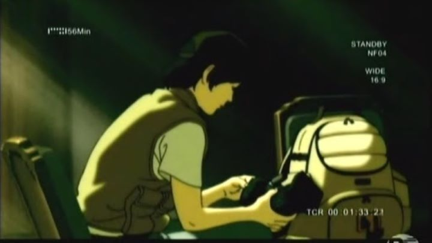

By 2020, I was fortunate enough to have obtained a copy of just about every anime series I cared for on home video... at least, every anime that was at some point licensed in North America. This took over 10 years, slowly determining what legacy shows mattered, waiting patiently for potential license rescues for long out-of-print titles, and finally buying used copies of those last few shows on Ebay. "FLAG," a 2006 anime (I thought it was older, for some reason) was one of the last on my radar, and by good fortune, online anime store Rightstuf.com was able to collect a bunch of used DVD volumes and sold them as an "as-is" complete set in 2020. I bought one within hours of the collection showing up online, only a day or two before it sold out again.I had come across the show once before, and am happy to have now seen the entire series. "FLAG" is a grounded, serious show, no doubt inspired by the renewed interest in conflicts of the Middle East and certain Asian countries after 9/11. That grouded approach can be refreshing, but be warned, it's also dull, and requires you to pay attention.Set in some unspecified near alternate-future, the poor Asian country of Uddiyana is ravaged by civil war (for our purposes, we'll assume the country to be fictional, but a brief online search suggests it is or was real, albeit difficult to find). During one demonstation, a young Japanese journalist/photographer captures a shot of protestors waving a blue flag with their symbol on it, just as the sun shines through, projecting the silhouette of two women knelt in prayer in the distance. Through photographer Shirasu's skill, timing, and good luck, the image becomes a sensation, published in news outlets around the world, both it and the flag itself becoming symbols for the peace that the different factions longed for. With the UN's guidance, a declaration of peace seems imminent. But things aren't that simple. Shirasu quickly gets asked to be the official war-time photographer for a secret military group under the UNF, whose current main mission, among other things, is to track down that one-of-a-kind blue flag, which was stolen shortly after the original photo was taken. Without the flag, the important symbol, talks of peace seem doomed to fail, which one of multiple local religious groups seem fine with. This secret UN force uses covert-ops to attack local miliary groups and terrorists, both to keep the uneasy peace and reduce state-wide casualties, and to hopefully find that flag. One of their most important weapons is the HAVWC, a highly-mobile armored motorcycle-like vehicle, which can transform into an up-right exo-suit with arms and legs, able to carry heavy objects and use guns or canons... yes, it was disappointing to see a show grounded in the realities of war fall victim to the common anime trope of "Gundam"-like robots. The HAVWC is treated with high importance too, so it wouldn't be easy to ignore or write-out of the story. To its credit, the design is distinct, and the general storytelling style of the show remains in-tact.Based on the premise, you might expect an exciting series of secret missions, like what Jack Bauer or Sam Fisher might do on a daily basis. But instead, "FLAG" choses to produce a documentary-like story, with the daily lives of the soldiers, usually hanging around at their base, exercising or eating, joking around, or preparing their equipment for the next mission. The entire show is composed of what Shirasu's camera sees, with over half being still shots, and the rest being grainy raw video footage. To balance things, Shirasu's mentor, also a front-line journalist, is the series narrator, and takes footage and describes events from the eyes of the citizens in the nearby town.  This style of storytelling is unique. It's also boring. The first episode of "FLAG" is pretty fantastic, worthwhile to be a standalone short film, or a pilot to the show that you never bother to follow up on. I admit the rest of the series is dull, such that I failed to finish it the first time. But if you pay attention, I find the show remains engaging and rewards your patience. Not necessarily because of what happens (I still don't know WHY civil war had broken out, or whether peace ever came to be), but because of the rich, multi-cultural characters. I'd say that the unorthadox style of "FLAG" is an interesting experiment. It tells a story that would be worthy for HBO or ShowTime, in a manner that advant-garde directors might attempt. But even though I personally have high respect for it, I must admit that most viewers will find it outrageously dull and meaningless. It's meant solely for fans of world-history and current event journalism, hardcore military geeks, or for fans of photography. Few other shows have managed to portray the poetry and importance of the camera, even though I still can't believe a single photo would be enough to bring peace (by comparison, "Speed Grapher" is the only other anime I can think of that features photography, which does so in a overly-violent and junvenille manner). "FLAG"'s production values are pretty good. Animation in the first episode in particular is excellent, although only one or two later episodes match the subtleties in character movement and expression. The biggest problem is that there is so LITTLE animation in a series full of photographs. The same can be said for music, which is largely non-existent, save for the opening and excellent ending themes. Sound effects for gunfire sounded a bit weird to me, so I don't think fans of sound-design will be satisfied with the effects here. Character designs are pleasent, contributing to the show looking like an international production instead of an anime. Limited 3D work is used effectively. Occasionally, the show will try to cut between visually-altered live-action shots and the anime characters, with was probably a mistake, only highlighting how flat the characters are by comparison.If anyone ever said they thought anme was only for hyper-active children or for inmature adults, I'd show them "FLAG." It tells a serious story and manages to stay respectful. It's about as dense as National-Geographic article, with the same feeling of lacking a point or purpose in the end. But journalism is like that, meant to showcase the world, not just at its best or worst, but as it is.
- "Ani" More reviews can be found at : https://2danicritic.github.io/ Previous review: review_Fixed Next review: review_FLCL